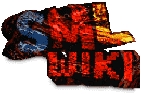
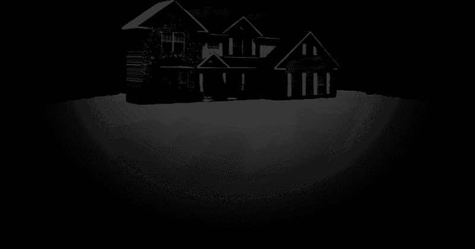
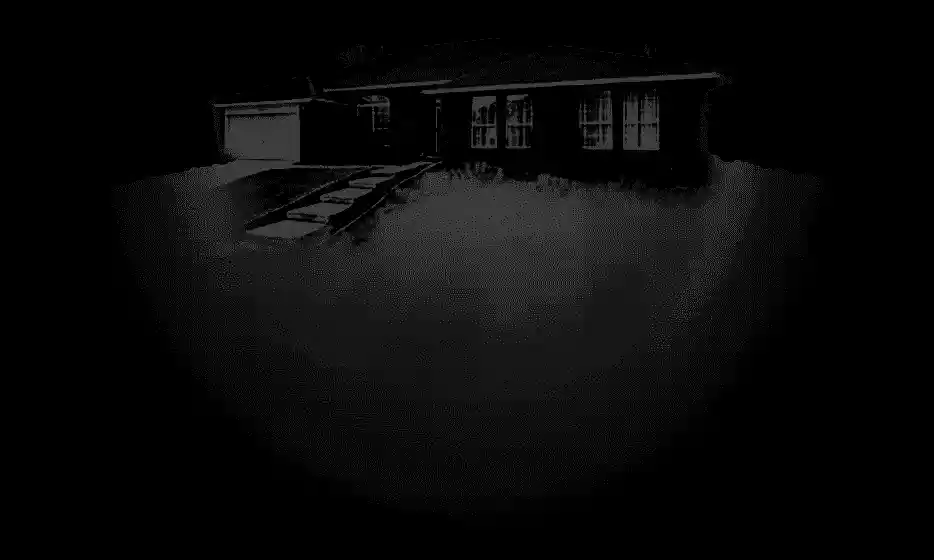

This website contains flashing lights and loud noises.
Sudden visuals could cause a seizure to occur to someone with photosensitive epilepsy
Sudden visuals could cause a seizure to occur to someone with photosensitive epilepsy
－ A browser & system that supports WebGL
－ A canvas size of at least 1024x768
－ Autoplay turned on
 